CV + Portfólio · Estratégia de Conteúdo
Content Strategist
7+ anos estruturando estratégias de conteúdo para marcas: do diagnóstico ao sistema editorial completo, com gestão de produção, governança de voz e uso de IA para escalar com consistência.
Sobre
Sou profissional de comunicação e conteúdo com foco em estratégia, planejamento e branding editorial. Ao longo de 7 anos, construí narrativas de marca, defini tom de voz, estruturei sistemas editoriais integrados e gerenciei a produção de conteúdo com agências, redatores e equipes multidisciplinares.
Meu trabalho não para no calendário: começa no diagnóstico, passa pela arquitetura de canais, pelos clusters de conteúdo, pela governança editorial e chega até os GPTs que desenvolvo para garantir que qualquer pessoa produza dentro da estratégia, sem perder a voz da marca.
Tenho pós-graduação em Fashion Business pela FAAP e experiência em campanhas de performance, e-mail marketing e projetos de inovação em comunicação, incluindo desenvolvimento de agentes de IA para otimização e padronização de conteúdo.
Vitrine de Conteúdo
Escrevo sobre branding, mercado de moda e maturidade analítica. Conecte-se comigo no LinkedIn para acompanhar as publicações:
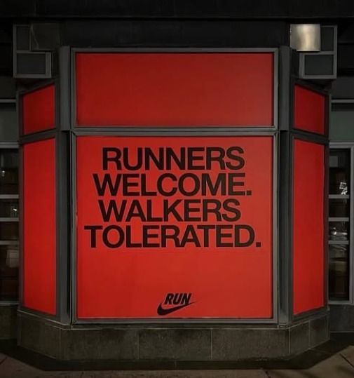
Uma análise sobre o impacto de desvios na identidade verbal e como a tentativa de soar exclusivo pode afastar a base real de consumidores da marca.
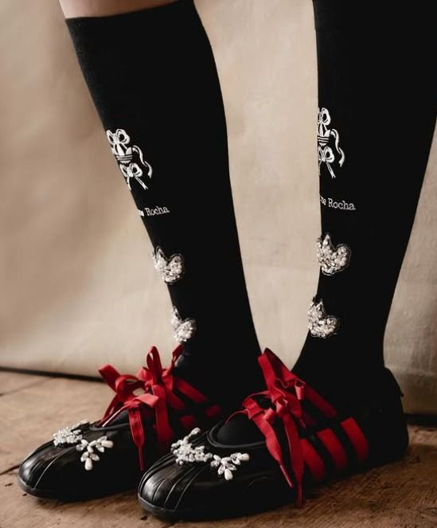
Estudo sobre a flexibilidade estratégica da marca ao ceder o protagonismo e cruzar territórios, do esporte de alta performance ao luxo romântico.
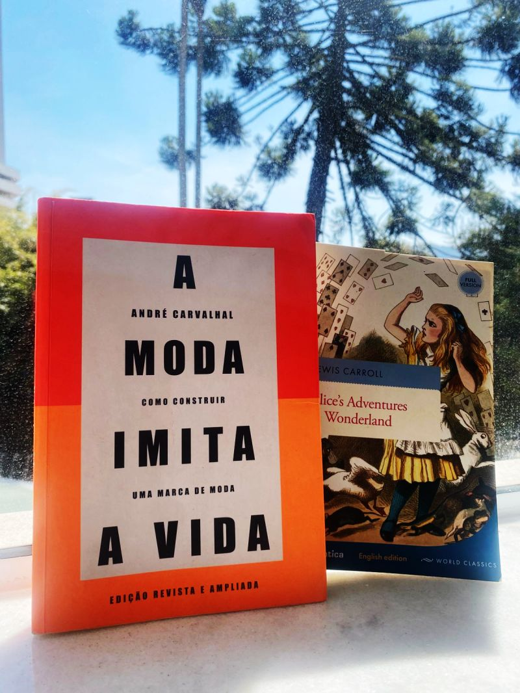
Uma reflexão franca sobre a importância de olhar para dentro e definir os objetivos essenciais de identidade antes de se render a trends passageiras.
Cases de Trabalho
Criação do guia oficial de governança editorial de uma empresa de intercâmbio corporativo: documento que define arquétipo de marca, subarquétipos funcionais, faixas de modulação por canal e critérios de aprovação de conteúdo. Complementado por um GPT personalizado para escrita e revisão com consistência de voz.
Contexto
A empresa não tinha um documento formal de governança verbal. A comunicação era produzida por múltiplos fornecedores (agência, redatores freelancers, equipe interna) sem critérios unificados de tom, postura ou modulação por canal.
Abordagem
Desenvolvi um manual de governança editorial. O documento define a voz institucional como única e estável, e prevê modulações por situação comunicacional. A estrutura inclui arquétipo de marca, subarquétipos funcionais, faixas de intensidade de voz por canal, critérios de aprovação e um teste de coerência para qualquer peça antes de ir ao ar.
Extensão prática com IA
Desenvolvi um GPT personalizado alimentado com o manual completo. Usado por mim e por fornecedores para escrever e revisar textos, garante que qualquer produção, inclusive de redatores externos, mantenha consistência com a identidade verbal definida.
Resultado
Instrumento de governança adotado como referência por marketing, parceiros e diretoria. Eliminou dependência de alinhamentos informais: qualquer conteúdo pode ser testado contra o documento antes de ir ao ar.
Desenvolvimento e modelagem da estratégia de conteúdo unificada para uma marca de intercâmbio corporativo, integrando estrategicamente a atuação de blog, redes sociais e newsletter para guiar a jornada de maturidade do lead B2B.
Diagnóstico que originou o documento
O diagnóstico revelou uma lacuna central: alto alcance não gerava leads proporcionais, e poucos leads avançavam para a etapa de contratação. Com ciclo de decisão longo, o conteúdo precisava gerar maturidade, não apenas visibilidade. A missão tornou-se: transformar atenção em avanço no funil através de uma engrenagem multicanal.
Estratégia trimestral
Cada trimestre recebeu uma missão editorial própria, definida com base no momento do público na jornada de decisão. A estrutura considerou períodos com produto ativo, períodos de aquecimento e períodos de colheita de prova social, com KPIs distintos para cada fase.
Clusters de conteúdo
A estratégia foi organizada em clusters temáticos que cobrem toda a jornada do público, desde a descoberta e educação até a decisão e fidelização, de modo que o conteúdo funcione de forma integrada e não apenas como postagens isoladas.
Integração Editorial de Canais (Blog, Redes e Newsletter)
Em vez de atuar com canais isolados ou réplicas automáticas de conteúdo, os canais operam de forma orquestrada. O Blog atua como a base profunda de conhecimento e SEO; as Redes Sociais funcionam como pontos capilares de atração, distribuição rápida e escuta ativa da audiência; e a Newsletter amarra o ecossistema como um produto editorial proprietário, responsável por construir relacionamento de longo prazo, contextualizar os dados coletados e guiar o lead diretamente ao momento de decisão.
GPT de conteúdo
Para garantir que a estratégia funcionasse na operação diária, desenvolvi um GPT personalizado alimentado com a estratégia completa, o manual de identidade verbal e documentos sobre os produtos da empresa. O GPT permite que qualquer pessoa da equipe, incluindo fornecedores externos, produza conteúdo alinhado sem depender de briefings extensos.
Framework de dados
Cada sinal de performance leva a um diagnóstico e uma ação de conteúdo. Exemplo: abertura alta + clique baixo = tema atraiu, conteúdo não acionou → rever CTA e hierarquia. Descadastro alto = desalinhamento de expectativa → rever promessa, frequência ou segmentação.
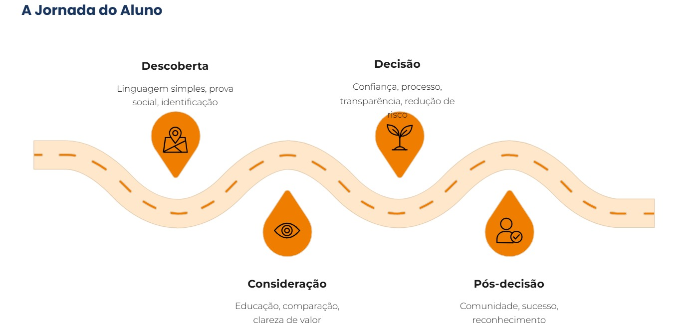
jornada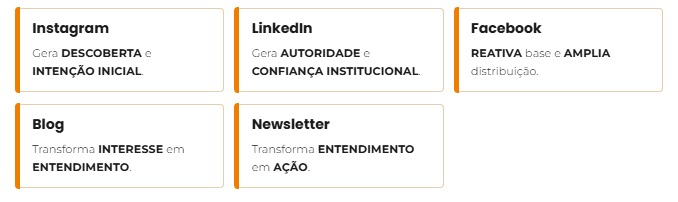
canais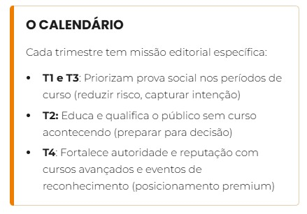
distribuição trimestral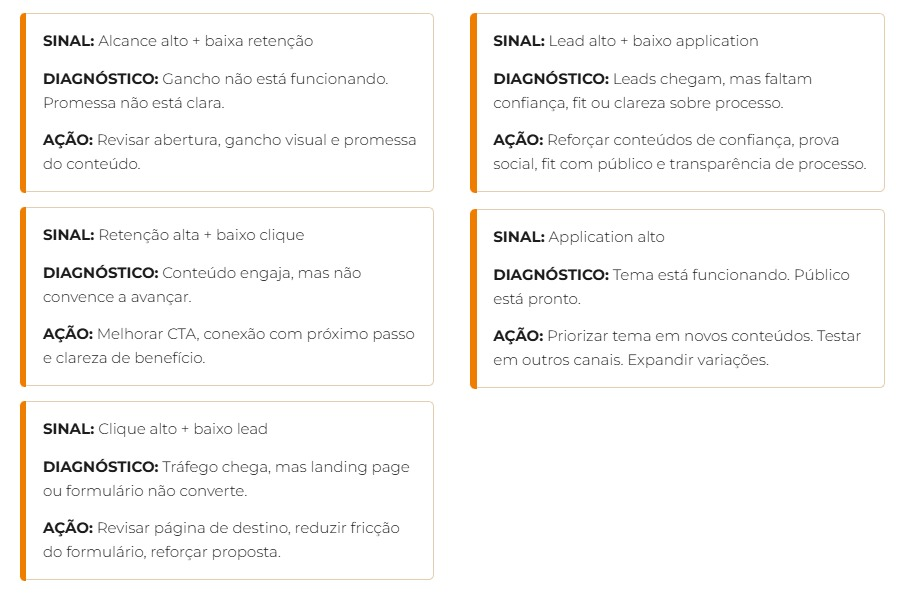
diagnóstico/açãoPrimeiro ciclo de implementação da estratégia de conteúdo: operacionalização completa de um mês editorial a partir da estratégia anual, com calendários diferenciados por plataforma, briefings para agência e execução dos três pilares (blog, newsletter e social media) em integração.
Contexto
A estratégia anual estava criada. O desafio foi operacionalizá-la no primeiro ciclo mensal, maximizando a eficiência e garantindo que blog, newsletter e social media funcionassem de forma integrada, com a mesma lógica editorial e sem depender de realinhamentos constantes com a agência e os redatores.
Como foi estruturado
O mês foi organizado em torno do momento do público na jornada, com públicos em estágios distintos de maturidade. Cada canal recebeu um calendário com lógica própria (não apenas replicação de conteúdo), e os briefings de blog e newsletter foram desenvolvidos a partir dos mesmos pilares editoriais do mês para direcionar a execução com segurança e consistência.
Volume de entregas
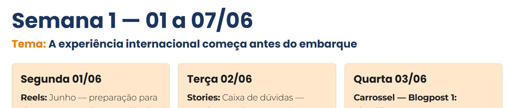
instagram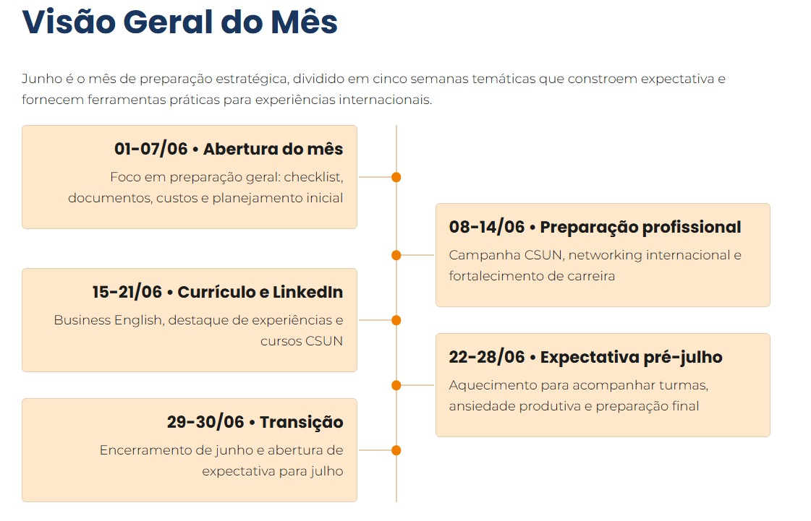
linkedin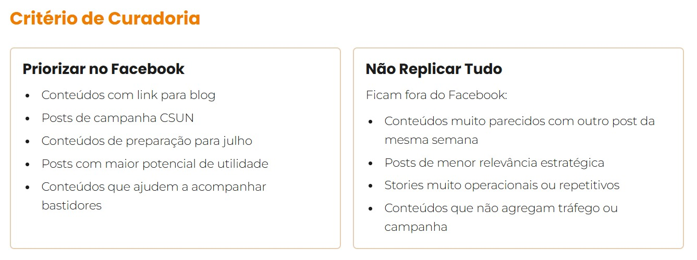
facebookDesenho, parametrização e implementação da arquitetura de gerenciamento de projetos para a produção simultânea de conteúdo internacional (três idiomas), unificando a esteira de equipes internas e prestadores externos.
Contexto
A empresa produz conteúdo simultâneo em três idiomas (PT, EN, ES) para diferentes mercados, com equipes de design, videomaker, redação e programação envolvidas. Sem uma parametrização clara no sistema de tarefas, o risco de retrabalho, quebra de tom de voz e atraso nas entregas globais era iminente.
Abordagem e Parametrização
Idealizei e montei o sistema operacional estruturado com subtarefas padronizadas por formato e idioma. Cada tarefa possui campos personalizados indexados: categoria (campanha, blogpost, institucional), objective (conversão, educação, relacionamento), plataforma de destino e responsável de entrega. O fluxo funciona sob um modelo em cadeia linear: texto PT → texto EN → texto ES → peças visuais PT → peças visuais EN → peças visuais ES → validação → agendamento.
Resultado
Visibilidade total do pipeline de conteúdo internacional. Qualquer membro da equipe ou fornecedor externo acessa o projeto e identifica exatamente em qual etapa de validação ou tradução a peça se encontra, eliminando ruídos de comunicação interna.
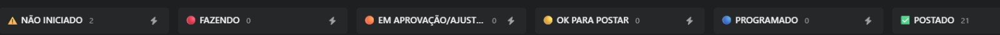
etapas projeto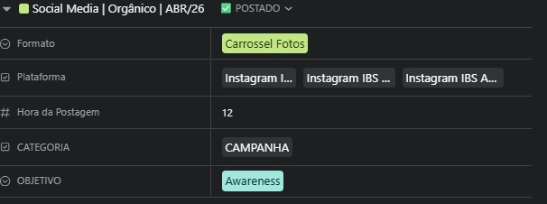
detalhes tarefas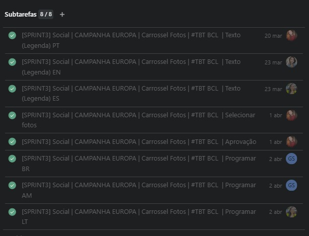
subtarefasCriação da primeira estratégia de conteúdo para redes sociais de uma ONG de educação profissional, transforming canais estáticos em pontos de contato estratégicos e levando o Instagram de 100 para 10 mil seguidores com conteúdo 100% orgânico.
Contexto
A instituição não tinha estratégia de conteúdo. Os canais existiam mas funcionavam como repositórios estáticos, sem narrativa de marca, consistência editorial ou propósito comunicacional claro.
Abordagem
Mapeei os públicos da instituição, defini pilares editoriais com base nos objetivos institucionais e estruturei um calendário com frequência consistente de publicação. Desenvolvi roteiros para vídeos e podcasts e coordenei a produção com equipe de design e audiovisual.
Resultado
Crescimento de 100 para 10 mil seguidores no Instagram por meio exclusivamente de conteúdo orgânico, sem impulsionamento pago. O canal passou a funcionar como ponto de contato estratégico para a marca, gerando engajamento e visibilidade para a missão institucional.
Trajetória Profissional
Estratégia de Conteúdo e Social Media
IBS Americas
Conteudista Freelancer
SEBRAE
Assistente de Comunicação e Marketing
Instituto da Oportunidade Social (IOS)
Estagiária de Comunicação
Instituto da Oportunidade Social (IOS)
Competências
Estratégia
Sistema editorial · Planejamento por funil · Tom de voz · Identidade verbal · Clusters de conteúdo · Inbound · SEO · Copywriting · Storytelling
Produção
Briefing editorial · Roteirização · Curadoria estética · Calendários multicanal · E-mail marketing · Comunicação interna
Gestão & dados
Asana · Trello · Google Analytics · Looker Studio · Semrush · RD Station · mLabs · Meta Business Suite · Salesforce · WordPress
IA & automação
ChatGPT · Claude · Gemini · ManyChat · GPTs personalizados · Agentes de IA · Otimização de fluxos de produção
Formação
Pós-graduação em Fashion Business
Pós-graduação em Docência para o Ensino Superior
Graduação em Comunicação Social, Jornalismo
Idiomas
O que dizem
"Ela orquestra com muita fluidez o conteúdo de múltiplos canais e gerencia de forma exemplar o relacionamento com agências e equipes multidisciplinares."
"Sua capacidade de organizar fluxos de trabalho faz dela uma parceira fundamental para qualquer time de marketing."